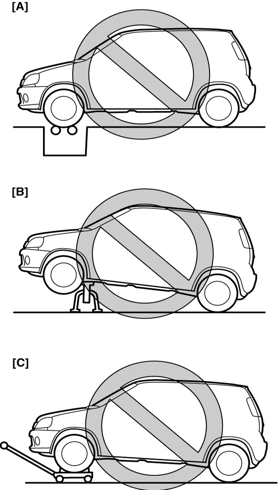
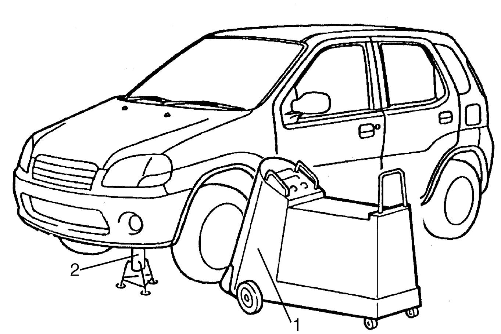

00
| Warning for Servicing 4WD Model |
Failure to take proper precautions when servicing a 4WD model can cause a vehicle accident, severe personal injury, or drivetrain damage.
•Never perform service work with the vehicle in any of the conditions [A], [B] or [C] shown below. The vehicle will move since the front wheels drive the rear wheels or the rear wheels drive the front wheels, or the coupling in the drivetrain will be damaged since there will be a difference in speed between the front and rear wheels.

•When testing the vehicle using a 2-wheel brake tester, observe the following instructions.

 "Expand image")
| [A]: | Testing with 2-wheel chassis dynamometer or speedometer tester. |
| [B]: | Driving front wheels, which are jacked up. |
| [C]: | Towing with rotation of either front or rear wheels blocked. |
—Shift the transaxle to N (Neutral) position.
—Select the AUTO mode from four driving modes.
—Run the engine at specified idle speed.
—Rotate the wheels (tires) by a brake tester at vehicle speed below 5 km/h (3 mile/h).
—Do not depress the accelerator pedal.
—Do not rotate the wheels (tires) for 1 min. or more.
•When testing the vehicle using a 2-wheel speedometer tester or 2-wheel chassis dynamometer, observe the following instructions.—Select the AUTO mode from four driving modes.
—Run the engine at specified idle speed.
—Rotate the wheels (tires) by a brake tester at vehicle speed below 5 km/h (3 mile/h).
—Do not depress the accelerator pedal.
—Do not rotate the wheels (tires) for 1 min. or more.
—Set the front wheels on the tester roller and the rear wheels on a 2-wheel free rotation roller.
—Select the AUTO mode from four driving modes.
—Rotate the wheels (tires) at vehicle speed below 50 km/h (37mile/h).
—Do not increase the vehicle speed rapidly.
—Do not rotate the wheels (tires) for 1 min. or more.
—Check that the vehicle does not move using wire ropes or chains.
•When using on-vehicle type wheel balancing equipment (1), observe the following precautions:—Select the AUTO mode from four driving modes.
—Rotate the wheels (tires) at vehicle speed below 50 km/h (37mile/h).
—Do not increase the vehicle speed rapidly.
—Do not rotate the wheels (tires) for 1 min. or more.
—Check that the vehicle does not move using wire ropes or chains.
—Raise and support the vehicle with safety stands (2) so that all four wheels are completely off the ground.
—Be careful not to be injured by the other wheels that rotate simultaneously with the wheel being balanced.
—Only tow the vehicle with all four wheels on a flatbed truck or with all four wheels on the ground.
—Be careful not to be injured by the other wheels that rotate simultaneously with the wheel being balanced.

 "Expand image")
NOTE:
While testing the vehicle using a brake tester, speedometer tester or chassis dynamometer, the 4WD warning light can be turned on or blinking. If the 4WD warning light lights or blinks, clear DTC after completion of the test.